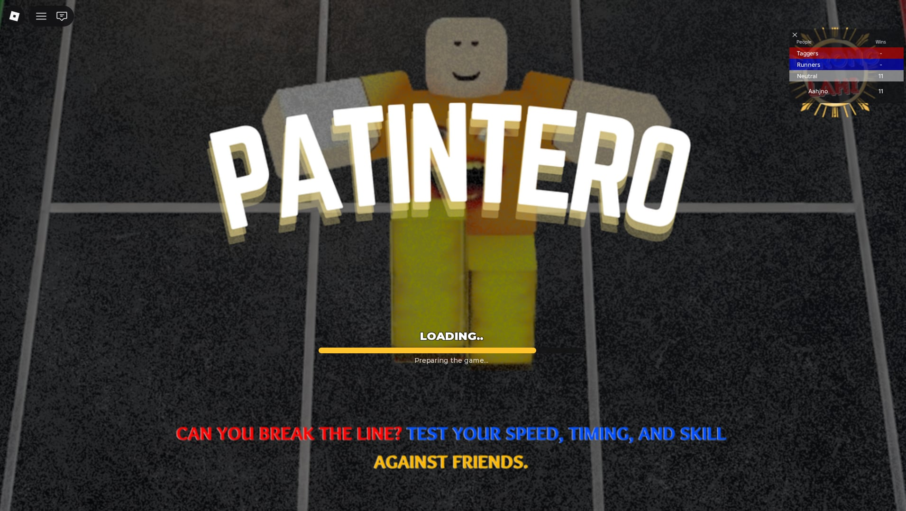

ACADEMIC / CLASSWORK • ROBLOX GAME
01
PATINTERO

Problem & Goal:
Created a multiplayer-inspired classroom project using Roblox Studio, focusing on an engaging gameplay loop, accessible UI, and a stylized 3D environment that felt polished and playable.
Key Outcome:
3D
Environment Build
Game
Prototype Loop
Technologies Used:
Roblox Studio
Blender
Lua
Play Game →
Classwork